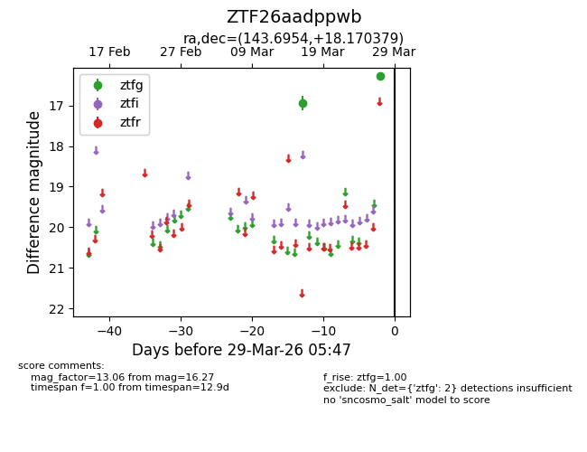
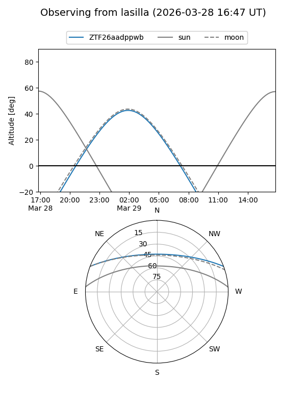
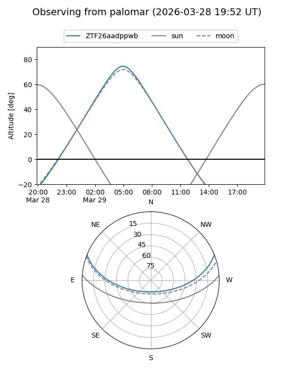

ZTF26aadppwb
Target ZTF26aadppwb at 2026-03-29 05:50
Aliases and brokers:
FINK: link
Lasair: link
ALeRCE: link
alt names
ZTF26aadppwb (ztf,fink_ztf)
Coordinates:
equatorial (ra, dec) = 143.6954,+18.17038
equatorial (HMS+DMS) = 09:34:46.89,+18:10:13.36
galactic (l, b) = (213.3910,+44.03788)
Flags:
Photometry:
last ztfg=16.27
2 ztfg detections
Lightcurve

Visibility


Additional plots